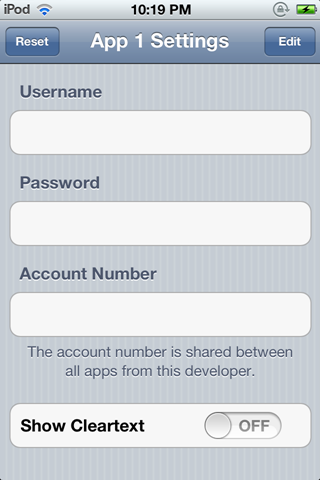
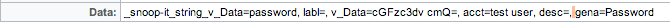
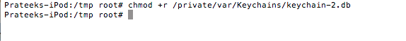
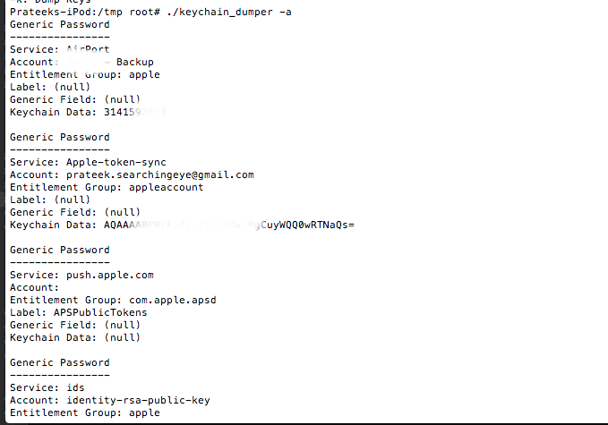

In the previous article, we looked at the different ways in which we could analyze the network traffic and the api calls being made through an IOS application. In this article, we will look at how we can dump the contents of the Keychain from an IOS device.
ETHICAL HACKING TRAINING – RESOURCES (INFOSEC)
Keychain Basics
According to Apple, a Keychain in an IOS device is a secure storage container that can be used to store sensitive infromation like usernames, passwords,network passwords, authentication tokens for different applications. Apple itself uses the Keychain to store Wi-fi network passwords, VPN credentials etc. It’s a sqlite database file located at /private/var/Keychains/keychain-2.db and all the data stored in it is encrypted. Developers usually want to leverage this feature of the operating system to store credentials rather than storing it themseleves in NSUserDefaults, plist files etc. The reason for this could be that the developer may not want the user to log in everytime and hence store the authentication information somewhere in the device and use it to log in the user automatically whenver the user opens up the app again. The keychain information for every app is stored outside of its sandbox.
It is also possible to share keychain data between applications through keychain access groups. This group has to be specified while saving the data in the keychain. The best way of saving data in Keychain is to use the KeychainItemWrapper class by Apple. A sample project can be found here. The first step is to create an instance of the class.
KeychainItemWrapper *wrapper = [[KeychainItemWrapper alloc] initWithIdentifier:@”Password” accessGroup:nil];
The identifier will help in fetching this information from the keychain later. In case you have to share information across applications, then you will have to specify an access group. Applications with the same access group can have access to the same keychain information.
KeychainItemWrapper *wrapper = [[KeychainItemWrapper alloc] initWithIdentifier:@”Account Number” accessGroup:@”YOUR_APP_ID_HERE.com.yourcompany.GenericKeychainSuite”];
To save info in the keychain, just use the setObject:forKey: method. In this case (id)kSecAttrAccount is a predefined key that we can use to define the account name for which we are storing the data. The kSecClass specifies the kind of information we are storing, in this case a generic password.The kSecValueData key can be used to store any form of data, in this case a password.
[keychainItemWrapper setObject:kSecClassGenericPassword forKey:(id)kSecClass];
[wrapper setObject:@”username” forKey:(id)kSecAttrAccount];
[keychainItemWrapper setObject:@”password”forKey:(id)kSecValueData];
[wrapper setObject:(id)kSecAttrAccessibleAlwaysThisDeviceOnly forKey:(id)kSecAttrAccessible];
The kSecAttrAccessible variable is used to specify when does the application need access to that data. We should be careful while using this option and use the most restrictive option. There are six possible values for this key which can be found in the screenshot below from Apple’s documentation.
Click to Enlarge
Ofcourse, we should never use kSecAttrAccessibleAlways. A safe option to go for would be kSecAttrAccessibleWhenUnlocked. Also, there are options that end with ThisDeviceOnly. If this option is chosen, the data is encrypted with a hardware specific key and hence could not be transferred to or viewed from another device. Even though they enforce additional security, it might not be a good idea to use them unless you have a good reason to not allow the migration of data between backups.
To fetch information from the keychain, use this.
NSString *accountName = [wrapper objectForKey:(id)kSecAttrAccount];
Analyzing Keychain read-write using Snoop-it
One of the great tools to analyze the data being written to the keychain is Snoop-it. If you haven’t seen it yet, check out this tutorial in the same series on Snoop-it. Now run the project GenericKeychain on your jailbroken device and analyze it using Snoop-it. There is already a tutorial for running applications with self-signed certificates in this series which could be found here. This app is just a sample project to demonstrate how to read and write from Keychain using a Obective-C wrapper class KeychainWrapper. Make sure this app is being analyzed using Snoop-it. Now open the app and this is the interface that we see.

Now enter some username and password and save it. In this case, lets enter the username as “Test User” and the password as “password”. You will see that Snoop-it detects any change to the keychain and is able to tell us the information stored in the keychain. It also tells us the protection attributes for the saved information.
Click to Enlarge
Here is the info that gives away the username and password.

Now, enter an account number. Snoop-it is able to detect that as well.
Click to Enlarge
As you can clearly note, Snoop-it is able to detect the action on the keychain database file as well, i.e whether it is a read, write or a delete. If you reset the contents of the keychain by tapping on Reset, you will see that it detects that as well.
Click to Enlarge
Dumping Keychain data using Keychain Dumper
One of the most popular tools for dumping information from the keychain is Keychain dumper by ptoomey3. The github page for this project can be found at this link https://github.com/ptoomey3/Keychain-Dumper. Just go to this url and download the zip file and unzip it. Inside this folder, the only file that we are interested is the keychain_dumper binary. The information that is allowed to be accessed by an application in the keychain is specified in its entitlements. This binary is signed with a self signed certificate with wildcard entitlements and hence it is able to access all the keychain items. There could also have been other ways to make sure all the keychain information is granted, like having the entitlements file contain all the keychain access groups or using a specific keychain access group that provides access to all the keychain data. For e.g a tool Keychain-viewer uses the following entitlments.
com.apple.keystore.access-keychain-keys
com.apple.keystore.device
Just upload this binary into your device in the /tmp folder and make sure its executable.
Click to Enlarge
Now make sure that the keychain database file stored at the location /private/var/Keychains/keychain-2.db is world readable.

Now run the binary.
Click to Enlarge
Click to Enlarge
As you can see, it dumps all the keychain information. You can see a lot of usernames and passwords stored here. For e.g, we can see that the Mail app stores the username/password of your account in the keychain. Similarly, it is possible to find passwords of some wireless networks that you have previously connected to and much more information. By default, the command above will only dump out the generic and internet passwords. You can see the usage information by using the “-h” command.
Click to Enlarge
You can dump all the information using the “-a” command.

One of the things that could make the information in the keychain more secure is using a strong passcode. This is because the passcode is used to encrypt the data in the keychain for specific protection attributes and hence having a strong passcode would enforce better security. IOS by default allows for a 4 digit passcode which could range from 0-9999 and hence could be bruteforced in a few minutes. We will look at bruteforcing passcodes later in this series. But there is also another option to set alphanumeric passwords which would take significantly more time to be bruteforced. A combination of a proper protection attribute combined with a strong passcode will help in keeping the data in the keychain much more difficult to be fetched out.
Conclusion
In this article, we looked at how easy it is to dump information from the Keychain of an IOS device. Even though keychain is a much better place of storing credentials and sensitive information than something like NSUserDefaults or plist files, it is however not difficult to break into it either.
References